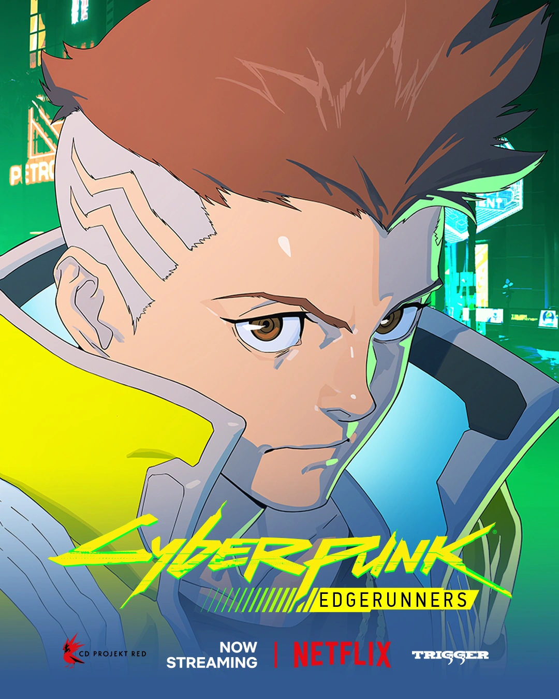

SANDEVISTAN MK.IV // CYBERSKELETONDavid Martinez
Su afinidad neurobiológica sin precedentes le permitió resistir cargas de implantes que habrían inducido ciberpsicosis fulminante en cualquier otro mercenario. Tras la caída de Maine, asumió el liderazgo del grupo manteniendo viva la promesa hecha a Lucy bajo el cielo simulado de la Luna.
- Rol Táctico
- Solo / Vanguardia de asalto
- Implante Clave
- Zetatech Sandevistan Militar
- Emblema
- Chaqueta EMT de Gloria